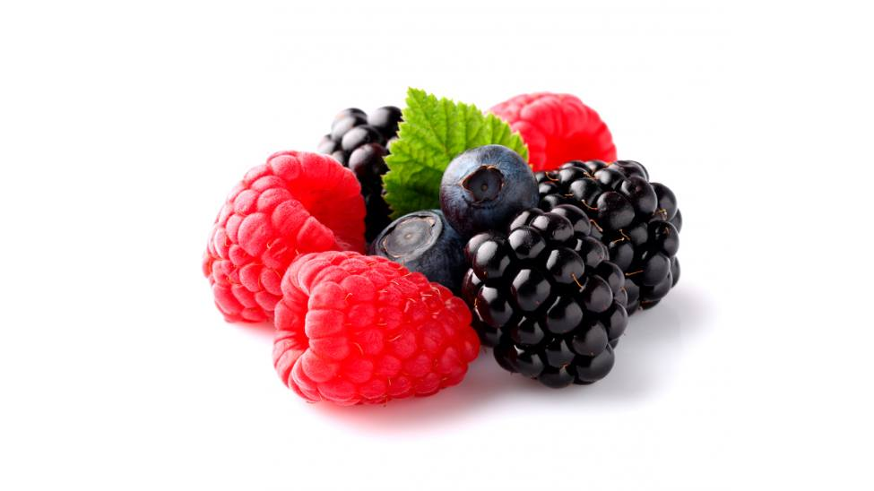

 Полученный с его помощью кефир является уникальным лечебным препаратом, помогающим бороться с аллергией, гипертонией, язвенной болезнью желудка и двенадцатиперстной кишки. Его употребление нормализует кишечную микрофлору. Кефир, получаемый в результате жизнедеятельности гриба, оказывает общее оздоровительное действие и стимулирует иммунитет.
 Настой тибетского молочного гриба снижает вес при ожирении. Весь его секрет в том, что он преобразует жиры в более простые соединения,
которые затем сам же и выводит из организма человека. Для того чтобы похудеть,
следует пить настой тибетского молочного гриба ежедневно через полчаса после еды и один два раза в неделю устраивать разгрузочные дни.
Настой тибетского молочного гриба снижает вес при ожирении. Весь его секрет в том, что он преобразует жиры в более простые соединения,
которые затем сам же и выводит из организма человека. Для того чтобы похудеть,
следует пить настой тибетского молочного гриба ежедневно через полчаса после еды и один два раза в неделю устраивать разгрузочные дни.
В лесу родилась елочка,
В лесу она росла.
Зимой и летом стройная,
Зеленая была.

Метель ей пела песенку:
- Спи, елочка, бай-бай.
Мороз снежком укутывал:
- Смотри, не замерзай.